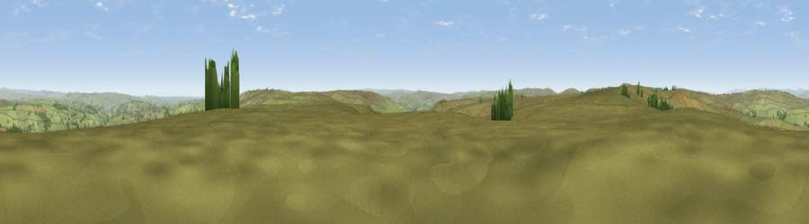

Viewpoint near Stanbury
#14554 in England · top 20% of its area beats it · near StanburyWhere it is
The exact computed spot (SD 99425 34625). Click the marker for map links.
The view, rendered

A 360° render of this exact spot computed from the terrain model, tree cover and land cover — summer colours, afternoon light, calibrated against photographs of famous viewpoints. Real trees, hedges and buildings will differ in detail.
The panorama
Grey silhouette: terrain skyline in each direction (720 bearings, Earth curvature and refraction included). Dashed green: skyline with trees (+15 m) and buildings (+8 m) as obstacles. Blue strip: how far the ground is visible on each bearing.
Where the view opens
Wedge length = distance to the farthest visible ground on that bearing (vegetation-aware). Rings at 10, 25 and 50 km.
What fills the view
94% grassland · 5% woodland · 2% built-up
Angular shares of the visible panorama (visual magnitude), not map area. Landscape diversity 0.12 (0–1 Shannon).
Key numbers
More beautiful places nearby
The staircase of upgrades: each row has a higher view potential than everything closer. Driving times are estimates from straight-line distance, calibrated against real road routing — check an actual route before setting out.
| Place | Direction | Drive | Score |
|---|---|---|---|
| Withins Height [Round Hill] | WNW · 2 km | ~5 min | 58.9 |
| Viewpoint near Pecket Well | SSE · 4 km | ~8 min | 59.5 |
| Crow Hill | WNW · 4 km | ~10 min | 63.2 |
| Viewpoint near Wycoller | WNW · 6 km | ~12 min | 66.3 |
| Lad Law (Boulsworth Hill) | W · 7 km | ~14 min | 71.5 |
| Pendle Hill | WNW · 20 km | ~34 min | 76.5 |
| Viewpoint near Otley | ENE · 23 km | ~38 min | 77.5 |
| Darwen Hill | WSW · 34 km | ~52 min | 80.7 |
53.80792, -2.01021 · source: screening · position refined by local search. Computed location — check access rights before visiting.